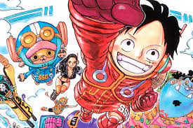
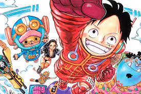

Explora el emocionante mundo de los mangas
Bienvenido a ManganZone, tu destino para descubrir y disfrutar de una amplia variedad de mangas emocionantes.
Sumérgete en historias épicas, conoce a personajes inolvidables y vive aventuras que te transportarán a mundos increíbles.
Desde los clásicos atemporales hasta los últimos lanzamientos, tenemos algo para todos los amantes del manga. Navega por nuestro directorio, descubre tus nuevos favoritos y únete a una comunidad apasionada de entusiastas del manga.


 

Mangas Más Conocidos
| Título | Autor | Género | Año de Creación |
|---|---|---|---|
| One Piece | Eiichiro Oda | Acción, Aventura, Fantasía | 1997 |
| Golgo 13 | Takao Saito | Acción, Meitantei | 1968 |
| Detective Conan | Gōshō Aoyama | Suspenso, Misterio | 1994 |
| Dragon Ball | Akira Toriyama | Acción, Fantasía | 1984 |
| Doraemon | Fujiko | Comedia, ciencia ficción | 1969 |
| Naruto | Masashi Kishimoto | Acción, Aventura, Comedia, Fantasía | 1999 |